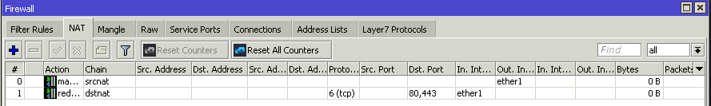

Mòdul Professional 12 - Síntesi: Firewall amb Mikrotik
Índex

1. Recordatoris genèrics
- Les regles es verifiquen de dalt a abaix i sempre s'aplica la primera regla que el filtratge coincideix amb el paquet. Per tant cal ordenar correctament les regles.
2. Implementar llistes blanques
Recordeu que el tallafocs a implementar ha de ser de llistes blanques per garantir major seguretat al projecte. Per fer-ho s'ha de denegar tot el tràfic per defecte. Això ho aconseguirem afegint tres regles finals de DROP, una per INPUT una per OUTPUT i una per FORWARD.
ATENCIÓ: Un cop creades aquestes regles, si no heu permés cap tràfic, el tallafocs no deixarà passar res i per tant podeu tenir problemes de connectivitat.
Des de terminal podem crear les regles amb les comandes següents:
ip firewall filter add chain=input action=drop ip firewall filter add chain=output action=drop ip firewall filter add chain=forward action=drop
3. Regles genèriques
De forma general, podem crear un seguit de regles que s'utilitzaràn de forma habitual en tots els projectes.
3.1. PINGs
ip firewall filter add chain=input protocol=icmp action=accept ip firewall filter add chain=output protocol=icmp action=accept ip firewall filter add chain=forward protocol=icmp action=accept
3.2. Respostes
ip firewall filter add chain=input connection-state=established,related action=accept ip firewall filter add chain=output connection-state=established,related action=accept ip firewall filter add chain=forward connection-state=established,related action=accept
4. Redireccions (NAT)
4.1. Connexió a Internet
Suposant que la interfície que connecta a Internet és ether1.
ip firewall nat add chain=srcnat out-interface=ether1 action=masquerade
A més cal permetre mitjançant filter les connexions que vulgueu.
4.2. Connexió des de Internet a serveis de la DMZ
Suposant que la interfície que connecta a Internet és ether1 i la IP del servidor web sigui 192.168.10.10 i la vlan de la DMZ s'anomena DMZ.
ip firewall nat add chain=dstnat in-interface=ether1 protocol=tcp dst-port=80,443 action=redirect to-address=192.168.10.10 ip firewall filter add chain=forward in-interface=ether1 out-interface=DMZ dst-address=192.168.10.10 protocol=tcp dst-port=80,443 action=accept
5. Com obrir servei a servei
Hem de recordar que la funció del router és connectar xarxes diferents, i la del tallafocs gestionar aquestes connexions. Per tant sempre que obrim una connexió entre dues xarxes filtrarem els paquets tant com puguem i inclourem de forma general els següents filtes:
- chain
- Cadena per on passa el paquet.
- in-interface
- Interfície per on entra el paquet al router, podeu jugar amb una ether o una vlan.
- out-interface
- Interfície per on surt el paquet del router, podeu jugar amb una ether o una vlan.
- protocol
- Protoocl del packet. Si no el sabeu cal investigar a Internet preferentment a fonts oficials.
- dst-port
- Ports de destí del paquet. Si no coneixeu quins ports utilitza un servei caldrà investigar a Internet preferentment utilitzant fonts oficials.
- dst-address
- Adreça de destí del paquet, aquesta pot ser una
IP(p.e.: 192.168.10.20) o un rang (p.e.: 192.168.10.0/24), depenent del que vulgueu aconseguir. - src-address
- Adreça d'origen del paquet, els valors poden ser els mateixos que a
dst-address. No ho utilitzareu gaire.
Per tant una regla típica per permetre una connexió serà:
ip firewall filter add chain=forward in-interface=ADMINS out-interface=SRV_INTERNS protocol=tcp dst-port=22 action=accept
6. Verificacions
6.1. Tràfic en les regles
Si una regla té al camp Bytes un valor de 0Kb de tràfic vol dir que no estan passant paquets per aquí… o no funciona o els paquets estan passant per una regla anterior.

Figure 1: Cal de les dues regles de NAT està capturant tràfic, per tant té pinta que no funcionen.
6.2. És problema del tallafocs?
Si algun servei de xarxa no funciona i creieu que pot ser el tallafocs podeu fer una prova ràpida: Pareu el tallafocs deshabilitant les tres últimes regles de DROP.
Si a partir d'aquí us funciona el servei és senyal que el problema el teniu al tallafocs. Si per contra continua sense funcionar podreu estar segurs que el tallafocs no és el problema (o no el únic problema).
ATENCIÓ: Recordeu sempre tornar a habilitar les tres regles finals de
DROP, si no el tallafocs no estarà funcionant!!!
6.3. Sniffers
Si voleu veure el tràfic que passa pel router recordeu que teniu l'eina torch. Allà podreu veure les connexions que hi passen, el protocol i els ports.